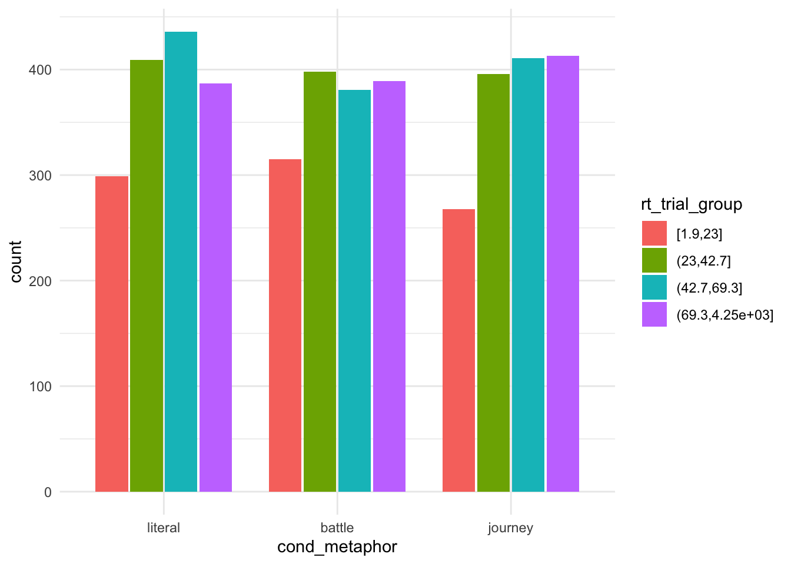
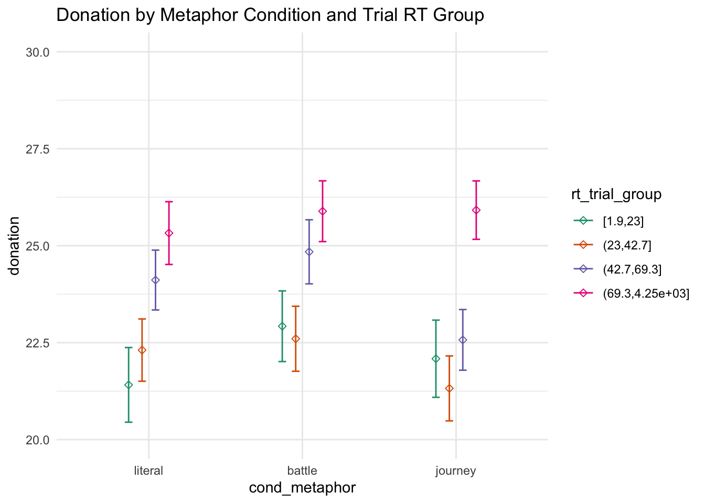
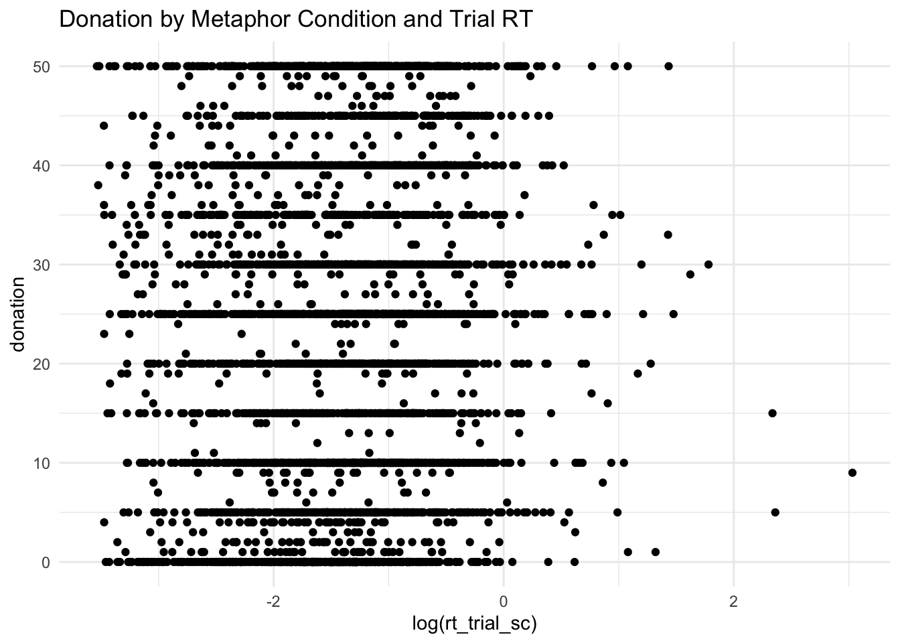
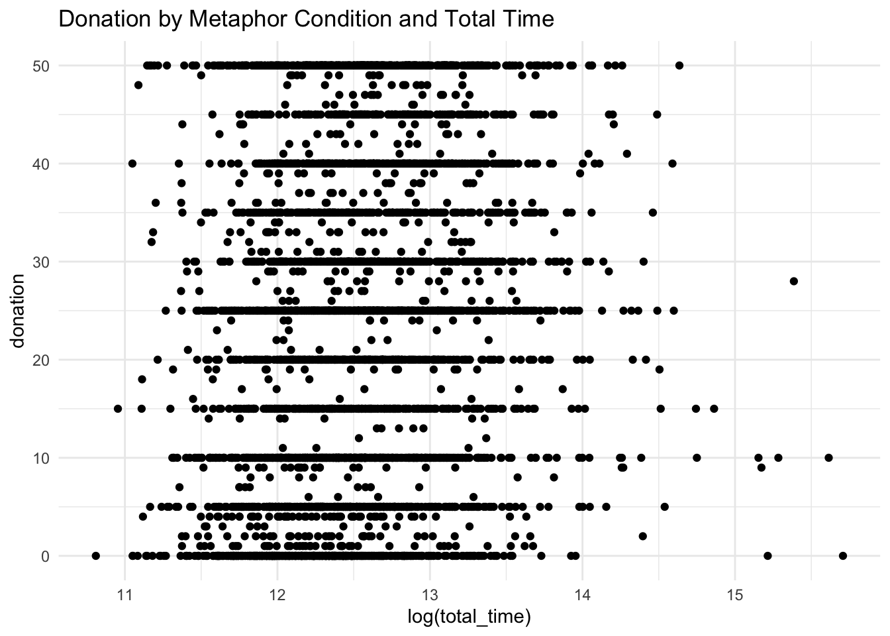

Chapter 7 Response Times
Response time across several levels may be correlated with comprehension and survey quality, and here we explore this speculative relationship.
Create a time that represent the time they took reading the actual content of the experiment (everything minus the consent form, brief form, purpose question, and feedback question).
trials = trials %>%
mutate(rt_inner = rt_instructions + rt_trial + rt_description + rt_pastdonations + rt_urgent + rt_sympathy + rt_self_cancer + rt_ff_cancer + rt_demographic + rt_age)We’ll scale the continuous times for easier interpretation of the models.
trials$rt_trial_sc = trials$rt_trial / (2 * sd(trials$rt_trial))
trials$rt_inner_sc = trials$rt_inner / (2 * sd(trials$rt_inner))
trials$total_time_sc = trials$total_time / (2 * sd(trials$total_time))7.1 Main Stimulus Timing
7.1.1 Relationship with Metaphor Condition
trials %>%
ggplot(aes(cond_metaphor, fill = rt_trial_group)) + itheme +
stat_count(geom = "bar", position = position_dodge(width = 0.8), width = 0.75)
model_bj_metaphor_base <- glm(update(base.formula, cond_metaphor ~ . ),
data = trials %>% filter(cond_metaphor != "literal"),
family = "binomial")
model_bj_metaphor_full <- glm(update(base.formula, cond_metaphor ~ . + rt_trial_group),
data = trials %>% filter(cond_metaphor != "literal"),
family = "binomial")
model_lj_metaphor_base <- glm(update(base.formula, cond_metaphor ~ . ),
data = trials %>% filter(cond_metaphor != "battle"),
family = "binomial")
model_lj_metaphor_full <- glm(update(base.formula, cond_metaphor ~ . + rt_trial_group),
data = trials %>% filter(cond_metaphor != "battle"),
family = "binomial")
model_lb_metaphor_base <- glm(update(base.formula, cond_metaphor ~ . ),
data = trials %>% filter(cond_metaphor != "journey"),
family = "binomial")
model_lb_metaphor_full <- glm(update(base.formula, cond_metaphor ~ . + rt_trial_group),
data = trials %>% filter(cond_metaphor != "journey"),
family = "binomial")
compare_lm(model_bj_metaphor_base, model_bj_metaphor_full)## Analysis of Deviance Table
##
## Model 1: cond_metaphor ~ cond_sex + self_cancer + ff_cancer + gender +
## education + socioeconomic + past_donations.z + age.z
## Model 2: cond_metaphor ~ cond_sex + self_cancer + ff_cancer + gender +
## education + socioeconomic + past_donations.z + age.z + rt_trial_group
## Resid. Df Resid. Dev Df Deviance Pr(>Chi)
## 1 2946 4094.4
## 2 2943 4086.1 3 8.2799 0.04057 *
## ---
## Signif. codes: 0 '***' 0.001 '**' 0.01 '*' 0.05 '.' 0.1 ' ' 1
## Chisq Stat: 8.28
## NULL
## MODEL INFO:
## Observations: 2971
## Dependent Variable: cond_metaphor
## Type: Generalized linear model
## Family: binomial
## Link function: logit
##
## MODEL FIT:
## χ²(27) = 32.548, p = 0.212
## Pseudo-R² (Cragg-Uhler) = 0.015
## Pseudo-R² (McFadden) = 0.008
## AIC = 4142.124, BIC = 4310.030
##
## Standard errors: MLE
## -------------------------------------------------------------------------------
## Est. 2.5% 97.5% z val. p
## ----------------------------------- -------- -------- -------- -------- -------
## (Intercept) -0.033 -1.033 0.968 -0.064 0.949
## cond_sexfemale 0.116 -0.029 0.262 1.566 0.117
## self_cancerY 0.318 -0.032 0.667 1.780 0.075
## self_cancerOO -0.383 -1.179 0.413 -0.942 0.346
## ff_cancerY 0.101 -0.058 0.260 1.245 0.213
## ff_cancerOO 0.079 -0.457 0.616 0.290 0.772
## genderF -0.066 -0.215 0.083 -0.867 0.386
## genderNB 0.461 -0.587 1.509 0.863 0.388
## genderOO 0.112 -1.332 1.556 0.153 0.879
## educationHS -0.456 -1.440 0.529 -0.907 0.365
## educationA -0.504 -1.502 0.495 -0.988 0.323
## educationB -0.340 -1.322 0.643 -0.678 0.498
## educationM -0.304 -1.303 0.694 -0.597 0.551
## educationP -0.288 -1.371 0.795 -0.521 0.602
## educationD -0.310 -1.421 0.801 -0.547 0.584
## educationOO -0.881 -2.369 0.607 -1.161 0.246
## socioeconomic10-25k 0.161 -0.113 0.436 1.154 0.249
## socioeconomic25-50k 0.099 -0.152 0.351 0.773 0.440
## socioeconomic50-75k 0.122 -0.146 0.390 0.895 0.371
## socioeconomic75-100k 0.014 -0.292 0.319 0.088 0.930
## socioeconomic100-150k 0.175 -0.180 0.529 0.966 0.334
## socioeconomic>150k 0.605 0.114 1.096 2.415 0.016
## socioeconomicOO -0.117 -0.605 0.370 -0.472 0.637
## past_donations.z -0.057 -0.200 0.086 -0.781 0.435
## age.z -0.174 -0.334 -0.014 -2.136 0.033
## rt_trial_group(23,42.7] 0.170 -0.048 0.387 1.528 0.127
## rt_trial_group(42.7,69.3] 0.281 0.060 0.502 2.496 0.013
## rt_trial_group(69.3,4.25e+03] 0.295 0.071 0.519 2.586 0.010
## -------------------------------------------------------------------------------compare_lm(model_lj_metaphor_base, model_lj_metaphor_full)## Analysis of Deviance Table
##
## Model 1: cond_metaphor ~ cond_sex + self_cancer + ff_cancer + gender +
## education + socioeconomic + past_donations.z + age.z
## Model 2: cond_metaphor ~ cond_sex + self_cancer + ff_cancer + gender +
## education + socioeconomic + past_donations.z + age.z + rt_trial_group
## Resid. Df Resid. Dev Df Deviance Pr(>Chi)
## 1 2994 4161.2
## 2 2991 4156.7 3 4.4746 0.2146
## Chisq Stat: 4.475
## NULLcompare_lm(model_lb_metaphor_base, model_lb_metaphor_full)## Analysis of Deviance Table
##
## Model 1: cond_metaphor ~ cond_sex + self_cancer + ff_cancer + gender +
## education + socioeconomic + past_donations.z + age.z
## Model 2: cond_metaphor ~ cond_sex + self_cancer + ff_cancer + gender +
## education + socioeconomic + past_donations.z + age.z + rt_trial_group
## Resid. Df Resid. Dev Df Deviance Pr(>Chi)
## 1 2989 4161
## 2 2986 4157 3 4.0204 0.2593
## Chisq Stat: 4.02
## NULLThe amount of time one takes to answer the main stimulus response signficantly predicts whether the condition was battle or journey, with the longer amount of time taken, the more likely the condition is battle.
The main stimulus response time does not predict whether the participant was in the journey or the literal condition, or the battle or the literal condition.
trials %>%
ggplot(aes(cond_metaphor, donation, color = rt_trial_group)) + itheme +
geom_errorbars +
coord_cartesian(ylim = c(20, 30)) +
labs(title = "Donation by Metaphor Condition and Trial RT Group")
model_metaphor_trial_group_base <- lm(update(base.formula, donation ~ . + cond_metaphor),
data = trials)
model_metaphor_trial_group_mid <- lm(update(base.formula, donation ~ . + cond_metaphor + rt_trial_group),
data = trials)
model_metaphor_trial_group_full <- lm(update(base.formula, donation ~ . + cond_metaphor * rt_trial_group),
data = trials)
compare_lm(model_metaphor_trial_group_base, model_metaphor_trial_group_mid)## Analysis of Variance Table
##
## Model 1: donation ~ cond_sex + self_cancer + ff_cancer + gender + education +
## socioeconomic + past_donations.z + age.z + cond_metaphor
## Model 2: donation ~ cond_sex + self_cancer + ff_cancer + gender + education +
## socioeconomic + past_donations.z + age.z + cond_metaphor +
## rt_trial_group
## Res.Df RSS Df Sum of Sq Pr(>Chi)
## 1 4475 1144489
## 2 4472 1132200 3 12289 1.635e-10 ***
## ---
## Signif. codes: 0 '***' 0.001 '**' 0.01 '*' 0.05 '.' 0.1 ' ' 1
## Chisq Stat: 48.602
## NULL
## MODEL INFO:
## Observations: 4502
## Dependent Variable: donation
## Type: OLS linear regression
##
## MODEL FIT:
## F(29,4472) = 6.210, p = 0.000
## R² = 0.039
## Adj. R² = 0.032
##
## Standard errors: OLS
## --------------------------------------------------------------------------------
## Est. 2.5% 97.5% t val. p
## ----------------------------------- -------- --------- -------- -------- -------
## (Intercept) 21.987 15.515 28.460 6.660 0.000
## cond_sexfemale -0.502 -1.436 0.432 -1.054 0.292
## self_cancerY 4.906 2.605 7.207 4.181 0.000
## self_cancerOO 5.444 0.485 10.403 2.152 0.031
## ff_cancerY 1.693 0.679 2.707 3.274 0.001
## ff_cancerOO 4.452 0.830 8.074 2.410 0.016
## genderF 0.762 -0.196 1.720 1.559 0.119
## genderNB 2.349 -3.952 8.650 0.731 0.465
## genderOO -3.058 -12.701 6.585 -0.622 0.534
## educationHS -3.519 -9.862 2.824 -1.088 0.277
## educationA -3.596 -10.026 2.834 -1.096 0.273
## educationB -2.110 -8.438 4.219 -0.654 0.513
## educationM -0.233 -6.659 6.194 -0.071 0.943
## educationP -1.698 -8.618 5.223 -0.481 0.631
## educationD -3.046 -10.202 4.110 -0.835 0.404
## educationOO -4.666 -14.598 5.265 -0.921 0.357
## socioeconomic10-25k -0.834 -2.610 0.942 -0.921 0.357
## socioeconomic25-50k 0.272 -1.342 1.885 0.330 0.741
## socioeconomic50-75k 1.179 -0.537 2.896 1.347 0.178
## socioeconomic75-100k 2.050 0.082 4.017 2.043 0.041
## socioeconomic100-150k 1.130 -1.135 3.395 0.978 0.328
## socioeconomic>150k 1.836 -1.324 4.995 1.139 0.255
## socioeconomicOO -2.460 -5.684 0.764 -1.496 0.135
## past_donations.z 2.704 1.755 3.653 5.587 0.000
## age.z -1.375 -2.391 -0.359 -2.653 0.008
## cond_metaphorbattle 0.733 -0.406 1.872 1.261 0.207
## cond_metaphorjourney -0.542 -1.681 0.597 -0.932 0.351
## rt_trial_group(23,42.7] 0.210 -1.184 1.605 0.295 0.768
## rt_trial_group(42.7,69.3] 2.128 0.715 3.542 2.952 0.003
## rt_trial_group(69.3,4.25e+03] 4.293 2.851 5.736 5.834 0.000
## --------------------------------------------------------------------------------compare_lm(model_metaphor_trial_group_mid, model_metaphor_trial_group_full)## Analysis of Variance Table
##
## Model 1: donation ~ cond_sex + self_cancer + ff_cancer + gender + education +
## socioeconomic + past_donations.z + age.z + cond_metaphor +
## rt_trial_group
## Model 2: donation ~ cond_sex + self_cancer + ff_cancer + gender + education +
## socioeconomic + past_donations.z + age.z + cond_metaphor +
## rt_trial_group + cond_metaphor:rt_trial_group
## Res.Df RSS Df Sum of Sq Pr(>Chi)
## 1 4472 1132200
## 2 4466 1131288 6 911.83 0.7307
## Chisq Stat: 3.627
## NULLThere is a main effect of main trial response time on donation amount, with participants who responded between 42.7 and 69.3 secs donating $2.13 more than baseline, and participants who responded slower than 69.3 secs donating on average $4.29 more than baseline.
There was no interaction between the metaphor condition and response time on the main trial which affected donations.
7.1.2 Continuous RT
trials %>%
ggplot(aes(log(rt_trial_sc), donation)) + itheme +
geom_point() +
labs(title = "Donation by Metaphor Condition and Trial RT")
model_trial_base <- lm(update(base.formula, donation ~ .),
data = trials)
model_trial_full <- lm(update(base.formula, donation ~ . + rt_trial_sc),
data = trials)
model_trial_full_log <- lm(update(base.formula, donation ~ . + log(rt_trial_sc)),
data = trials)
model_trial_full_poly <- lm(update(base.formula, donation ~ . + rt_trial_sc + I(rt_trial_sc^2)),
data = trials)
model_trial_full_poly_log <- lm(update(base.formula, donation ~ . + log(rt_trial_sc) + I(log(rt_trial_sc)^2)),
data = trials)
compare_lm(model_trial_base, model_trial_full)## Analysis of Variance Table
##
## Model 1: donation ~ cond_sex + self_cancer + ff_cancer + gender + education +
## socioeconomic + past_donations.z + age.z
## Model 2: donation ~ cond_sex + self_cancer + ff_cancer + gender + education +
## socioeconomic + past_donations.z + age.z + rt_trial_sc
## Res.Df RSS Df Sum of Sq Pr(>Chi)
## 1 4477 1145461
## 2 4476 1144215 1 1245.6 0.02729 *
## ---
## Signif. codes: 0 '***' 0.001 '**' 0.01 '*' 0.05 '.' 0.1 ' ' 1
## Chisq Stat: 4.898
## NULL
## MODEL INFO:
## Observations: 4502
## Dependent Variable: donation
## Type: OLS linear regression
##
## MODEL FIT:
## F(25,4476) = 5.254, p = 0.000
## R² = 0.029
## Adj. R² = 0.023
##
## Standard errors: OLS
## ------------------------------------------------------------------------
## Est. 2.5% 97.5% t val. p
## --------------------------- -------- --------- -------- -------- -------
## (Intercept) 23.461 17.060 29.862 7.186 0.000
## cond_sexfemale -0.508 -1.445 0.430 -1.061 0.289
## self_cancerY 4.408 2.103 6.712 3.750 0.000
## self_cancerOO 5.359 0.381 10.336 2.111 0.035
## ff_cancerY 1.878 0.862 2.894 3.624 0.000
## ff_cancerOO 4.229 0.593 7.866 2.280 0.023
## genderF 0.953 -0.006 1.911 1.947 0.052
## genderNB 2.253 -4.078 8.584 0.698 0.485
## genderOO -3.146 -12.834 6.541 -0.637 0.524
## educationHS -3.497 -9.867 2.873 -1.076 0.282
## educationA -3.494 -9.951 2.964 -1.061 0.289
## educationB -2.224 -8.580 4.132 -0.686 0.493
## educationM -0.417 -6.872 6.039 -0.127 0.899
## educationP -1.924 -8.875 5.027 -0.543 0.587
## educationD -3.233 -10.421 3.954 -0.882 0.378
## educationOO -4.055 -14.032 5.921 -0.797 0.426
## socioeconomic10-25k -0.838 -2.621 0.945 -0.922 0.357
## socioeconomic25-50k 0.179 -1.441 1.799 0.217 0.828
## socioeconomic50-75k 0.951 -0.772 2.673 1.082 0.279
## socioeconomic75-100k 1.961 -0.016 3.937 1.945 0.052
## socioeconomic100-150k 0.838 -1.434 3.111 0.723 0.469
## socioeconomic>150k 1.527 -1.645 4.698 0.944 0.345
## socioeconomicOO -2.383 -5.622 0.856 -1.442 0.149
## past_donations.z 2.630 1.677 3.583 5.411 0.000
## age.z -0.578 -1.570 0.415 -1.141 0.254
## rt_trial_sc 1.059 0.118 2.000 2.207 0.027
## ------------------------------------------------------------------------compare_lm(model_trial_base, model_trial_full_log)## Analysis of Variance Table
##
## Model 1: donation ~ cond_sex + self_cancer + ff_cancer + gender + education +
## socioeconomic + past_donations.z + age.z
## Model 2: donation ~ cond_sex + self_cancer + ff_cancer + gender + education +
## socioeconomic + past_donations.z + age.z + log(rt_trial_sc)
## Res.Df RSS Df Sum of Sq Pr(>Chi)
## 1 4477 1145461
## 2 4476 1135768 1 9692.7 6.391e-10 ***
## ---
## Signif. codes: 0 '***' 0.001 '**' 0.01 '*' 0.05 '.' 0.1 ' ' 1
## Chisq Stat: 38.257
## NULL
## MODEL INFO:
## Observations: 4502
## Dependent Variable: donation
## Type: OLS linear regression
##
## MODEL FIT:
## F(25,4476) = 6.624, p = 0.000
## R² = 0.036
## Adj. R² = 0.030
##
## Standard errors: OLS
## ------------------------------------------------------------------------
## Est. 2.5% 97.5% t val. p
## --------------------------- -------- --------- -------- -------- -------
## (Intercept) 26.424 20.010 32.838 8.077 0.000
## cond_sexfemale -0.521 -1.456 0.413 -1.094 0.274
## self_cancerY 4.912 2.610 7.215 4.183 0.000
## self_cancerOO 5.821 0.860 10.782 2.300 0.021
## ff_cancerY 1.710 0.698 2.723 3.312 0.001
## ff_cancerOO 4.397 0.774 8.021 2.379 0.017
## genderF 0.754 -0.203 1.712 1.545 0.123
## genderNB 2.256 -4.051 8.563 0.701 0.483
## genderOO -3.305 -12.956 6.347 -0.671 0.502
## educationHS -3.341 -9.688 3.006 -1.032 0.302
## educationA -3.363 -9.797 3.070 -1.025 0.305
## educationB -1.960 -8.293 4.373 -0.607 0.544
## educationM -0.100 -6.533 6.332 -0.031 0.976
## educationP -1.512 -8.439 5.415 -0.428 0.669
## educationD -3.006 -10.167 4.155 -0.823 0.411
## educationOO -4.086 -14.026 5.854 -0.806 0.420
## socioeconomic10-25k -0.859 -2.635 0.917 -0.948 0.343
## socioeconomic25-50k 0.223 -1.391 1.837 0.271 0.787
## socioeconomic50-75k 1.119 -0.598 2.835 1.277 0.202
## socioeconomic75-100k 2.035 0.066 4.004 2.026 0.043
## socioeconomic100-150k 1.077 -1.187 3.341 0.932 0.351
## socioeconomic>150k 1.629 -1.531 4.788 1.011 0.312
## socioeconomicOO -2.491 -5.719 0.736 -1.513 0.130
## past_donations.z 2.693 1.744 3.643 5.560 0.000
## age.z -1.175 -2.184 -0.165 -2.281 0.023
## log(rt_trial_sc) 1.961 1.339 2.583 6.180 0.000
## ------------------------------------------------------------------------compare_lm(model_trial_full, model_trial_full_poly)## Analysis of Variance Table
##
## Model 1: donation ~ cond_sex + self_cancer + ff_cancer + gender + education +
## socioeconomic + past_donations.z + age.z + rt_trial_sc
## Model 2: donation ~ cond_sex + self_cancer + ff_cancer + gender + education +
## socioeconomic + past_donations.z + age.z + rt_trial_sc +
## I(rt_trial_sc^2)
## Res.Df RSS Df Sum of Sq Pr(>Chi)
## 1 4476 1144215
## 2 4475 1139280 1 4935 1.069e-05 ***
## ---
## Signif. codes: 0 '***' 0.001 '**' 0.01 '*' 0.05 '.' 0.1 ' ' 1
## Chisq Stat: 19.459
## NULL
## MODEL INFO:
## Observations: 4502
## Dependent Variable: donation
## Type: OLS linear regression
##
## MODEL FIT:
## F(26,4475) = 5.818, p = 0.000
## R² = 0.033
## Adj. R² = 0.027
##
## Standard errors: OLS
## ------------------------------------------------------------------------
## Est. 2.5% 97.5% t val. p
## --------------------------- -------- --------- -------- -------- -------
## (Intercept) 22.417 16.012 28.822 6.862 0.000
## cond_sexfemale -0.452 -1.388 0.484 -0.946 0.344
## self_cancerY 4.573 2.272 6.873 3.896 0.000
## self_cancerOO 5.437 0.470 10.404 2.146 0.032
## ff_cancerY 1.873 0.860 2.887 3.623 0.000
## ff_cancerOO 4.336 0.706 7.965 2.342 0.019
## genderF 0.889 -0.069 1.846 1.819 0.069
## genderNB 2.355 -3.963 8.673 0.731 0.465
## genderOO -3.313 -12.980 6.355 -0.672 0.502
## educationHS -3.350 -9.707 3.008 -1.033 0.302
## educationA -3.378 -9.822 3.067 -1.028 0.304
## educationB -2.009 -8.353 4.335 -0.621 0.535
## educationM -0.236 -6.679 6.206 -0.072 0.943
## educationP -1.804 -8.741 5.133 -0.510 0.610
## educationD -2.992 -10.166 4.182 -0.818 0.414
## educationOO -3.881 -13.838 6.076 -0.764 0.445
## socioeconomic10-25k -0.882 -2.662 0.897 -0.972 0.331
## socioeconomic25-50k 0.146 -1.471 1.763 0.177 0.859
## socioeconomic50-75k 0.963 -0.756 2.682 1.099 0.272
## socioeconomic75-100k 1.931 -0.041 3.904 1.920 0.055
## socioeconomic100-150k 1.048 -1.221 3.318 0.906 0.365
## socioeconomic>150k 1.596 -1.569 4.761 0.989 0.323
## socioeconomicOO -2.418 -5.650 0.815 -1.466 0.143
## past_donations.z 2.671 1.720 3.622 5.505 0.000
## age.z -0.805 -1.801 0.191 -1.585 0.113
## rt_trial_sc 3.821 2.274 5.369 4.842 0.000
## I(rt_trial_sc^2) -0.251 -0.363 -0.140 -4.403 0.000
## ------------------------------------------------------------------------compare_lm(model_trial_full_log, model_trial_full_poly_log)## Analysis of Variance Table
##
## Model 1: donation ~ cond_sex + self_cancer + ff_cancer + gender + education +
## socioeconomic + past_donations.z + age.z + log(rt_trial_sc)
## Model 2: donation ~ cond_sex + self_cancer + ff_cancer + gender + education +
## socioeconomic + past_donations.z + age.z + log(rt_trial_sc) +
## I(log(rt_trial_sc)^2)
## Res.Df RSS Df Sum of Sq Pr(>Chi)
## 1 4476 1135768
## 2 4475 1135758 1 10.111 0.8418
## Chisq Stat: 0.04
## NULLA linear predictor of main trial stimulus RT significantly predicts the donation amount, and a predictor of the log of the main trial RT even moreso significantly predicts donations amounts. Compared to the scaled stimulus RT, a degree-2 polynomial nontransformed stimulus RT predictor makes a significant improvement in model fit.
There is not, however, an improvement for a polynomial model when the stimulus RT variables are log-transformed
7.1.3 Discretized RT
trials %>%
ggplot(aes(rt_trial_group, donation)) + itheme +
geom_errorbars +
coord_cartesian(ylim = c(20, 30)) +
labs(title = "Donation by Metaphor Condition and Trial RT Group")Participants’ donations depend on the amount of time they took reading the main stimulus
model_trial_group_base <- lm(update(base.formula, donation ~ .),
data = trials)
model_trial_group_full <- lm(update(base.formula, donation ~ . + rt_trial_group),
data = trials)
compare_lm(model_trial_group_base, model_trial_group_full)## Analysis of Variance Table
##
## Model 1: donation ~ cond_sex + self_cancer + ff_cancer + gender + education +
## socioeconomic + past_donations.z + age.z
## Model 2: donation ~ cond_sex + self_cancer + ff_cancer + gender + education +
## socioeconomic + past_donations.z + age.z + rt_trial_group
## Res.Df RSS Df Sum of Sq Pr(>Chi)
## 1 4477 1145461
## 2 4474 1133407 3 12054 2.613e-10 ***
## ---
## Signif. codes: 0 '***' 0.001 '**' 0.01 '*' 0.05 '.' 0.1 ' ' 1
## Chisq Stat: 47.628
## NULL
## MODEL INFO:
## Observations: 4502
## Dependent Variable: donation
## Type: OLS linear regression
##
## MODEL FIT:
## F(27,4474) = 6.489, p = 0.000
## R² = 0.038
## Adj. R² = 0.032
##
## Standard errors: OLS
## --------------------------------------------------------------------------------
## Est. 2.5% 97.5% t val. p
## ----------------------------------- -------- --------- -------- -------- -------
## (Intercept) 22.053 15.610 28.496 6.710 0.000
## cond_sexfemale -0.526 -1.460 0.408 -1.103 0.270
## self_cancerY 4.843 2.543 7.143 4.128 0.000
## self_cancerOO 5.519 0.559 10.479 2.182 0.029
## ff_cancerY 1.674 0.660 2.688 3.237 0.001
## ff_cancerOO 4.451 0.830 8.072 2.410 0.016
## genderF 0.775 -0.183 1.733 1.586 0.113
## genderNB 2.264 -4.038 8.566 0.704 0.481
## genderOO -3.126 -12.772 6.519 -0.635 0.525
## educationHS -3.421 -9.765 2.923 -1.057 0.291
## educationA -3.489 -9.920 2.942 -1.064 0.288
## educationB -2.038 -8.368 4.292 -0.631 0.528
## educationM -0.169 -6.597 6.259 -0.052 0.959
## educationP -1.642 -8.564 5.280 -0.465 0.642
## educationD -2.982 -10.140 4.176 -0.817 0.414
## educationOO -4.453 -14.387 5.480 -0.879 0.379
## socioeconomic10-25k -0.864 -2.640 0.911 -0.954 0.340
## socioeconomic25-50k 0.253 -1.361 1.866 0.307 0.759
## socioeconomic50-75k 1.155 -0.562 2.871 1.319 0.187
## socioeconomic75-100k 2.050 0.082 4.018 2.042 0.041
## socioeconomic100-150k 1.095 -1.171 3.360 0.947 0.344
## socioeconomic>150k 1.708 -1.449 4.865 1.060 0.289
## socioeconomicOO -2.432 -5.657 0.792 -1.479 0.139
## past_donations.z 2.716 1.767 3.665 5.611 0.000
## age.z -1.340 -2.356 -0.325 -2.587 0.010
## rt_trial_group(23,42.7] 0.173 -1.221 1.568 0.244 0.807
## rt_trial_group(42.7,69.3] 2.067 0.655 3.480 2.869 0.004
## rt_trial_group(69.3,4.25e+03] 4.232 2.790 5.674 5.754 0.000
## --------------------------------------------------------------------------------7.2 Experiment Content Timing
Participants’ donations depend on the amount of time they took reading the actual content of the experiment (everything minus the consent form, brief form, purpose question, and feedback question).
trials %>%
ggplot(aes(log(rt_inner), donation)) + itheme +
geom_point() +
labs(title = "Donation by Metaphor Condition and Sum of Inner RTs")model_inner_base <- lm(update(base.formula, donation ~ .),
data = trials)
model_inner_full <- lm(update(base.formula, donation ~ . + rt_inner),
data = trials)
model_inner_full_log <- lm(update(base.formula, donation ~ . + log(rt_inner)),
data = trials)
model_inner_full_poly <- lm(update(base.formula, donation ~ . + rt_inner + I(rt_inner^2)),
data = trials)
model_inner_full_poly_log <- lm(update(base.formula, donation ~ . + log(rt_inner) + I(log(rt_inner)^2)),
data = trials)
compare_lm(model_inner_base, model_inner_full)## Analysis of Variance Table
##
## Model 1: donation ~ cond_sex + self_cancer + ff_cancer + gender + education +
## socioeconomic + past_donations.z + age.z
## Model 2: donation ~ cond_sex + self_cancer + ff_cancer + gender + education +
## socioeconomic + past_donations.z + age.z + rt_inner
## Res.Df RSS Df Sum of Sq Pr(>Chi)
## 1 4477 1145461
## 2 4476 1133118 1 12342 2.9e-12 ***
## ---
## Signif. codes: 0 '***' 0.001 '**' 0.01 '*' 0.05 '.' 0.1 ' ' 1
## Chisq Stat: 48.773
## NULL
## MODEL INFO:
## Observations: 4502
## Dependent Variable: donation
## Type: OLS linear regression
##
## MODEL FIT:
## F(25,4476) = 7.059, p = 0.000
## R² = 0.038
## Adj. R² = 0.033
##
## Standard errors: OLS
## ------------------------------------------------------------------------
## Est. 2.5% 97.5% t val. p
## --------------------------- -------- --------- -------- -------- -------
## (Intercept) 21.233 14.831 27.634 6.503 0.000
## cond_sexfemale -0.537 -1.470 0.396 -1.129 0.259
## self_cancerY 4.402 2.110 6.694 3.765 0.000
## self_cancerOO 5.478 0.525 10.431 2.168 0.030
## ff_cancerY 2.131 1.117 3.144 4.121 0.000
## ff_cancerOO 4.437 0.817 8.056 2.403 0.016
## genderF 0.983 0.029 1.937 2.019 0.044
## genderNB 2.535 -3.766 8.836 0.789 0.430
## genderOO -3.322 -12.962 6.318 -0.676 0.499
## educationHS -3.099 -9.439 3.242 -0.958 0.338
## educationA -3.214 -9.640 3.213 -0.980 0.327
## educationB -1.952 -8.277 4.374 -0.605 0.545
## educationM -0.124 -6.549 6.300 -0.038 0.970
## educationP -1.394 -8.313 5.525 -0.395 0.693
## educationD -2.921 -10.074 4.232 -0.801 0.423
## educationOO -3.810 -13.739 6.118 -0.752 0.452
## socioeconomic10-25k -0.943 -2.718 0.831 -1.042 0.297
## socioeconomic25-50k 0.134 -1.478 1.746 0.163 0.871
## socioeconomic50-75k 0.982 -0.732 2.696 1.123 0.261
## socioeconomic75-100k 2.033 0.066 3.999 2.026 0.043
## socioeconomic100-150k 0.942 -1.319 3.202 0.816 0.414
## socioeconomic>150k 1.692 -1.465 4.848 1.051 0.293
## socioeconomicOO -2.152 -5.376 1.072 -1.309 0.191
## past_donations.z 2.651 1.703 3.599 5.480 0.000
## age.z -0.906 -1.897 0.084 -1.794 0.073
## rt_inner 0.000 0.000 0.000 6.982 0.000
## ------------------------------------------------------------------------compare_lm(model_inner_base, model_inner_full_log)## Analysis of Variance Table
##
## Model 1: donation ~ cond_sex + self_cancer + ff_cancer + gender + education +
## socioeconomic + past_donations.z + age.z
## Model 2: donation ~ cond_sex + self_cancer + ff_cancer + gender + education +
## socioeconomic + past_donations.z + age.z + log(rt_inner)
## Res.Df RSS Df Sum of Sq Pr(>Chi)
## 1 4477 1145461
## 2 4476 1114847 1 30614 < 2.2e-16 ***
## ---
## Signif. codes: 0 '***' 0.001 '**' 0.01 '*' 0.05 '.' 0.1 ' ' 1
## Chisq Stat: 121.958
## NULL
## MODEL INFO:
## Observations: 4502
## Dependent Variable: donation
## Type: OLS linear regression
##
## MODEL FIT:
## F(25,4476) = 10.109, p = 0.000
## R² = 0.053
## Adj. R² = 0.048
##
## Standard errors: OLS
## --------------------------------------------------------------------------
## Est. 2.5% 97.5% t val. p
## --------------------------- --------- --------- --------- -------- -------
## (Intercept) -37.310 -49.839 -24.780 -5.838 0.000
## cond_sexfemale -0.566 -1.491 0.360 -1.199 0.231
## self_cancerY 4.719 2.445 6.994 4.068 0.000
## self_cancerOO 5.638 0.725 10.551 2.250 0.025
## ff_cancerY 2.078 1.075 3.081 4.061 0.000
## ff_cancerOO 4.720 1.130 8.311 2.577 0.010
## genderF 0.939 -0.008 1.886 1.945 0.052
## genderNB 2.672 -3.578 8.921 0.838 0.402
## genderOO -3.612 -13.174 5.951 -0.740 0.459
## educationHS -2.616 -8.906 3.674 -0.815 0.415
## educationA -2.757 -9.133 3.618 -0.848 0.397
## educationB -1.396 -7.672 4.879 -0.436 0.663
## educationM 0.489 -5.885 6.863 0.150 0.880
## educationP -0.573 -7.439 6.292 -0.164 0.870
## educationD -2.129 -9.227 4.968 -0.588 0.556
## educationOO -3.648 -13.496 6.200 -0.726 0.468
## socioeconomic10-25k -0.942 -2.702 0.818 -1.050 0.294
## socioeconomic25-50k 0.115 -1.483 1.714 0.142 0.887
## socioeconomic50-75k 1.193 -0.508 2.894 1.375 0.169
## socioeconomic75-100k 2.095 0.145 4.046 2.106 0.035
## socioeconomic100-150k 1.338 -0.906 3.582 1.169 0.243
## socioeconomic>150k 2.089 -1.043 5.221 1.307 0.191
## socioeconomicOO -2.008 -5.206 1.190 -1.231 0.218
## past_donations.z 2.648 1.707 3.589 5.519 0.000
## age.z -1.632 -2.629 -0.635 -3.210 0.001
## log(rt_inner) 4.921 4.051 5.791 11.087 0.000
## --------------------------------------------------------------------------compare_lm(model_inner_full, model_inner_full_poly)## Analysis of Variance Table
##
## Model 1: donation ~ cond_sex + self_cancer + ff_cancer + gender + education +
## socioeconomic + past_donations.z + age.z + rt_inner
## Model 2: donation ~ cond_sex + self_cancer + ff_cancer + gender + education +
## socioeconomic + past_donations.z + age.z + rt_inner + I(rt_inner^2)
## Res.Df RSS Df Sum of Sq Pr(>Chi)
## 1 4476 1133118
## 2 4475 1118785 1 14334 3.68e-14 ***
## ---
## Signif. codes: 0 '***' 0.001 '**' 0.01 '*' 0.05 '.' 0.1 ' ' 1
## Chisq Stat: 57.312
## NULL
## MODEL INFO:
## Observations: 4502
## Dependent Variable: donation
## Type: OLS linear regression
##
## MODEL FIT:
## F(26,4475) = 9.078, p = 0.000
## R² = 0.050
## Adj. R² = 0.045
##
## Standard errors: OLS
## ------------------------------------------------------------------------
## Est. 2.5% 97.5% t val. p
## --------------------------- -------- --------- -------- -------- -------
## (Intercept) 18.255 11.846 24.663 5.585 0.000
## cond_sexfemale -0.509 -1.437 0.418 -1.077 0.282
## self_cancerY 4.554 2.275 6.832 3.919 0.000
## self_cancerOO 5.497 0.575 10.419 2.189 0.029
## ff_cancerY 2.118 1.111 3.126 4.123 0.000
## ff_cancerOO 4.571 0.974 8.168 2.491 0.013
## genderF 0.995 0.047 1.944 2.057 0.040
## genderNB 2.727 -3.534 8.989 0.854 0.393
## genderOO -3.524 -13.105 6.056 -0.721 0.471
## educationHS -2.606 -8.908 3.696 -0.811 0.418
## educationA -2.769 -9.156 3.618 -0.850 0.395
## educationB -1.447 -7.735 4.840 -0.451 0.652
## educationM 0.489 -5.897 6.875 0.150 0.881
## educationP -0.804 -7.681 6.074 -0.229 0.819
## educationD -2.195 -9.306 4.916 -0.605 0.545
## educationOO -3.516 -13.383 6.351 -0.699 0.485
## socioeconomic10-25k -0.887 -2.651 0.876 -0.986 0.324
## socioeconomic25-50k 0.052 -1.550 1.654 0.063 0.950
## socioeconomic50-75k 1.057 -0.646 2.761 1.217 0.224
## socioeconomic75-100k 2.031 0.077 3.986 2.038 0.042
## socioeconomic100-150k 1.299 -0.950 3.547 1.132 0.258
## socioeconomic>150k 1.945 -1.192 5.082 1.215 0.224
## socioeconomicOO -2.055 -5.259 1.149 -1.257 0.209
## past_donations.z 2.642 1.699 3.584 5.495 0.000
## age.z -1.324 -2.315 -0.334 -2.621 0.009
## rt_inner 0.000 0.000 0.000 10.250 0.000
## I(rt_inner^2) -0.000 -0.000 -0.000 -7.572 0.000
## ------------------------------------------------------------------------compare_lm(model_inner_full_log, model_inner_full_poly_log)## Analysis of Variance Table
##
## Model 1: donation ~ cond_sex + self_cancer + ff_cancer + gender + education +
## socioeconomic + past_donations.z + age.z + log(rt_inner)
## Model 2: donation ~ cond_sex + self_cancer + ff_cancer + gender + education +
## socioeconomic + past_donations.z + age.z + log(rt_inner) +
## I(log(rt_inner)^2)
## Res.Df RSS Df Sum of Sq Pr(>Chi)
## 1 4476 1114847
## 2 4475 1111068 1 3779.2 9.562e-05 ***
## ---
## Signif. codes: 0 '***' 0.001 '**' 0.01 '*' 0.05 '.' 0.1 ' ' 1
## Chisq Stat: 15.287
## NULL
## MODEL INFO:
## Observations: 4502
## Dependent Variable: donation
## Type: OLS linear regression
##
## MODEL FIT:
## F(26,4475) = 10.336, p = 0.000
## R² = 0.057
## Adj. R² = 0.051
##
## Standard errors: OLS
## -----------------------------------------------------------------------------
## Est. 2.5% 97.5% t val. p
## --------------------------- ---------- ---------- ---------- -------- -------
## (Intercept) -316.825 -457.839 -175.811 -4.405 0.000
## cond_sexfemale -0.588 -1.512 0.336 -1.248 0.212
## self_cancerY 4.904 2.631 7.177 4.230 0.000
## self_cancerOO 5.721 0.816 10.626 2.286 0.022
## ff_cancerY 1.868 0.861 2.875 3.636 0.000
## ff_cancerOO 4.729 1.144 8.314 2.586 0.010
## genderF 0.876 -0.069 1.822 1.816 0.069
## genderNB 2.494 -3.746 8.735 0.784 0.433
## genderOO -3.700 -13.248 5.847 -0.760 0.447
## educationHS -2.686 -8.966 3.594 -0.839 0.402
## educationA -2.767 -9.132 3.598 -0.852 0.394
## educationB -1.347 -7.613 4.919 -0.421 0.673
## educationM 0.540 -5.824 6.903 0.166 0.868
## educationP -0.436 -7.291 6.419 -0.125 0.901
## educationD -2.052 -9.138 5.034 -0.568 0.570
## educationOO -3.804 -13.637 6.029 -0.758 0.448
## socioeconomic10-25k -0.882 -2.639 0.876 -0.983 0.325
## socioeconomic25-50k 0.173 -1.423 1.770 0.213 0.831
## socioeconomic50-75k 1.327 -0.372 3.027 1.531 0.126
## socioeconomic75-100k 2.114 0.166 4.062 2.128 0.033
## socioeconomic100-150k 1.523 -0.719 3.766 1.332 0.183
## socioeconomic>150k 2.202 -0.925 5.330 1.380 0.168
## socioeconomicOO -2.025 -5.217 1.168 -1.243 0.214
## past_donations.z 2.641 1.702 3.580 5.513 0.000
## age.z -1.836 -2.836 -0.836 -3.598 0.000
## log(rt_inner) 50.194 27.427 72.961 4.322 0.000
## I(log(rt_inner)^2) -1.829 -2.748 -0.910 -3.901 0.000
## -----------------------------------------------------------------------------7.3 Experiment Timing
Participants’ donations depend on the amount of time they took for the entire experiment.
trials %>%
ggplot(aes(log(total_time), donation)) + itheme +
geom_point() +
labs(title = "Donation by Metaphor Condition and Total Time")
model_entire_base <- lm(update(base.formula, donation ~ .),
data = trials)
model_entire_full <- lm(update(base.formula, donation ~ . + total_time),
data = trials)
model_entire_full_log <- lm(update(base.formula, donation ~ . + log(total_time)),
data = trials)
model_entire_full_poly <- lm(update(base.formula, donation ~ . + total_time + I(total_time^2)),
data = trials)
model_entire_full_poly_log <- lm(update(base.formula, donation ~ . + log(total_time) + I(log(total_time)^2)),
data = trials)
compare_lm(model_entire_base, model_entire_full)## Analysis of Variance Table
##
## Model 1: donation ~ cond_sex + self_cancer + ff_cancer + gender + education +
## socioeconomic + past_donations.z + age.z
## Model 2: donation ~ cond_sex + self_cancer + ff_cancer + gender + education +
## socioeconomic + past_donations.z + age.z + total_time
## Res.Df RSS Df Sum of Sq Pr(>Chi)
## 1 4477 1145461
## 2 4476 1136020 1 9440.5 1.068e-09 ***
## ---
## Signif. codes: 0 '***' 0.001 '**' 0.01 '*' 0.05 '.' 0.1 ' ' 1
## Chisq Stat: 37.258
## NULL
## MODEL INFO:
## Observations: 4502
## Dependent Variable: donation
## Type: OLS linear regression
##
## MODEL FIT:
## F(25,4476) = 6.583, p = 0.000
## R² = 0.035
## Adj. R² = 0.030
##
## Standard errors: OLS
## ------------------------------------------------------------------------
## Est. 2.5% 97.5% t val. p
## --------------------------- -------- --------- -------- -------- -------
## (Intercept) 21.834 15.434 28.235 6.688 0.000
## cond_sexfemale -0.509 -1.443 0.426 -1.067 0.286
## self_cancerY 4.340 2.045 6.635 3.708 0.000
## self_cancerOO 5.294 0.335 10.253 2.093 0.036
## ff_cancerY 2.021 1.007 3.034 3.909 0.000
## ff_cancerOO 4.310 0.687 7.934 2.332 0.020
## genderF 0.920 -0.036 1.875 1.887 0.059
## genderNB 2.400 -3.908 8.709 0.746 0.456
## genderOO -3.187 -12.840 6.466 -0.647 0.517
## educationHS -3.182 -9.530 3.166 -0.983 0.326
## educationA -3.207 -9.642 3.228 -0.977 0.329
## educationB -1.991 -8.325 4.343 -0.616 0.538
## educationM -0.124 -6.557 6.309 -0.038 0.970
## educationP -1.412 -8.341 5.516 -0.400 0.689
## educationD -2.982 -10.144 4.180 -0.816 0.414
## educationOO -3.793 -13.734 6.149 -0.748 0.455
## socioeconomic10-25k -0.924 -2.701 0.853 -1.019 0.308
## socioeconomic25-50k 0.108 -1.506 1.723 0.132 0.895
## socioeconomic50-75k 0.989 -0.728 2.705 1.129 0.259
## socioeconomic75-100k 1.969 0.000 3.938 1.961 0.050
## socioeconomic100-150k 0.760 -1.504 3.024 0.658 0.510
## socioeconomic>150k 1.653 -1.507 4.813 1.025 0.305
## socioeconomicOO -2.234 -5.462 0.994 -1.357 0.175
## past_donations.z 2.613 1.663 3.563 5.395 0.000
## age.z -0.747 -1.735 0.242 -1.481 0.139
## total_time 0.000 0.000 0.000 6.099 0.000
## ------------------------------------------------------------------------compare_lm(model_entire_base, model_entire_full_log)## Analysis of Variance Table
##
## Model 1: donation ~ cond_sex + self_cancer + ff_cancer + gender + education +
## socioeconomic + past_donations.z + age.z
## Model 2: donation ~ cond_sex + self_cancer + ff_cancer + gender + education +
## socioeconomic + past_donations.z + age.z + log(total_time)
## Res.Df RSS Df Sum of Sq Pr(>Chi)
## 1 4477 1145461
## 2 4476 1106706 1 38755 < 2.2e-16 ***
## ---
## Signif. codes: 0 '***' 0.001 '**' 0.01 '*' 0.05 '.' 0.1 ' ' 1
## Chisq Stat: 154.955
## NULL
## MODEL INFO:
## Observations: 4502
## Dependent Variable: donation
## Type: OLS linear regression
##
## MODEL FIT:
## F(25,4476) = 11.500, p = 0.000
## R² = 0.060
## Adj. R² = 0.055
##
## Standard errors: OLS
## --------------------------------------------------------------------------
## Est. 2.5% 97.5% t val. p
## --------------------------- --------- --------- --------- -------- -------
## (Intercept) -44.307 -56.701 -31.913 -7.009 0.000
## cond_sexfemale -0.560 -1.482 0.363 -1.190 0.234
## self_cancerY 4.471 2.205 6.736 3.869 0.000
## self_cancerOO 5.246 0.351 10.141 2.101 0.036
## ff_cancerY 2.012 1.013 3.011 3.949 0.000
## ff_cancerOO 4.560 0.983 8.137 2.499 0.012
## genderF 0.861 -0.083 1.804 1.789 0.074
## genderNB 2.661 -3.566 8.887 0.838 0.402
## genderOO -3.506 -13.034 6.021 -0.721 0.471
## educationHS -2.508 -8.775 3.759 -0.785 0.433
## educationA -2.683 -9.035 3.669 -0.828 0.408
## educationB -1.350 -7.603 4.902 -0.423 0.672
## educationM 0.558 -5.793 6.908 0.172 0.863
## educationP -0.386 -7.226 6.455 -0.111 0.912
## educationD -2.207 -9.277 4.864 -0.612 0.541
## educationOO -3.427 -13.240 6.385 -0.685 0.494
## socioeconomic10-25k -0.961 -2.715 0.792 -1.075 0.283
## socioeconomic25-50k 0.166 -1.427 1.759 0.204 0.839
## socioeconomic50-75k 1.287 -0.408 2.981 1.488 0.137
## socioeconomic75-100k 2.073 0.129 4.016 2.091 0.037
## socioeconomic100-150k 1.218 -1.017 3.453 1.069 0.285
## socioeconomic>150k 2.276 -0.845 5.397 1.429 0.153
## socioeconomicOO -2.050 -5.236 1.136 -1.261 0.207
## past_donations.z 2.537 1.600 3.475 5.307 0.000
## age.z -1.644 -2.633 -0.655 -3.260 0.001
## log(total_time) 5.352 4.514 6.190 12.520 0.000
## --------------------------------------------------------------------------compare_lm(model_entire_full, model_entire_full_poly)## Analysis of Variance Table
##
## Model 1: donation ~ cond_sex + self_cancer + ff_cancer + gender + education +
## socioeconomic + past_donations.z + age.z + total_time
## Model 2: donation ~ cond_sex + self_cancer + ff_cancer + gender + education +
## socioeconomic + past_donations.z + age.z + total_time + I(total_time^2)
## Res.Df RSS Df Sum of Sq Pr(>Chi)
## 1 4476 1136020
## 2 4475 1114954 1 21066 < 2.2e-16 ***
## ---
## Signif. codes: 0 '***' 0.001 '**' 0.01 '*' 0.05 '.' 0.1 ' ' 1
## Chisq Stat: 84.27
## NULL
## MODEL INFO:
## Observations: 4502
## Dependent Variable: donation
## Type: OLS linear regression
##
## MODEL FIT:
## F(26,4475) = 9.700, p = 0.000
## R² = 0.053
## Adj. R² = 0.048
##
## Standard errors: OLS
## ------------------------------------------------------------------------
## Est. 2.5% 97.5% t val. p
## --------------------------- -------- --------- -------- -------- -------
## (Intercept) 18.339 11.954 24.724 5.631 0.000
## cond_sexfemale -0.542 -1.468 0.384 -1.148 0.251
## self_cancerY 4.355 2.081 6.629 3.755 0.000
## self_cancerOO 5.189 0.276 10.102 2.070 0.038
## ff_cancerY 2.088 1.084 3.092 4.077 0.000
## ff_cancerOO 4.405 0.815 7.995 2.405 0.016
## genderF 0.963 0.016 1.910 1.994 0.046
## genderNB 2.645 -3.605 8.896 0.830 0.407
## genderOO -3.286 -12.850 6.278 -0.674 0.501
## educationHS -2.523 -8.815 3.768 -0.786 0.432
## educationA -2.770 -9.146 3.606 -0.852 0.394
## educationB -1.480 -7.756 4.796 -0.462 0.644
## educationM 0.386 -5.989 6.760 0.119 0.906
## educationP -0.735 -7.601 6.132 -0.210 0.834
## educationD -2.398 -9.495 4.699 -0.662 0.508
## educationOO -3.330 -13.181 6.520 -0.663 0.508
## socioeconomic10-25k -0.936 -2.696 0.824 -1.042 0.297
## socioeconomic25-50k 0.220 -1.379 1.820 0.270 0.787
## socioeconomic50-75k 1.158 -0.543 2.859 1.335 0.182
## socioeconomic75-100k 2.077 0.125 4.028 2.086 0.037
## socioeconomic100-150k 1.353 -0.894 3.599 1.180 0.238
## socioeconomic>150k 2.069 -1.063 5.202 1.295 0.195
## socioeconomicOO -2.046 -5.244 1.153 -1.254 0.210
## past_donations.z 2.548 1.607 3.489 5.308 0.000
## age.z -1.301 -2.287 -0.314 -2.585 0.010
## total_time 0.000 0.000 0.000 11.058 0.000
## I(total_time^2) -0.000 -0.000 -0.000 -9.195 0.000
## ------------------------------------------------------------------------compare_lm(model_entire_full_log, model_entire_full_poly_log)## Analysis of Variance Table
##
## Model 1: donation ~ cond_sex + self_cancer + ff_cancer + gender + education +
## socioeconomic + past_donations.z + age.z + log(total_time)
## Model 2: donation ~ cond_sex + self_cancer + ff_cancer + gender + education +
## socioeconomic + past_donations.z + age.z + log(total_time) +
## I(log(total_time)^2)
## Res.Df RSS Df Sum of Sq Pr(>Chi)
## 1 4476 1106706
## 2 4475 1096154 1 10552 5.257e-11 ***
## ---
## Signif. codes: 0 '***' 0.001 '**' 0.01 '*' 0.05 '.' 0.1 ' ' 1
## Chisq Stat: 43.132
## NULL
## MODEL INFO:
## Observations: 4502
## Dependent Variable: donation
## Type: OLS linear regression
##
## MODEL FIT:
## F(26,4475) = 12.819, p = 0.000
## R² = 0.069
## Adj. R² = 0.064
##
## Standard errors: OLS
## -----------------------------------------------------------------------------
## Est. 2.5% 97.5% t val. p
## --------------------------- ---------- ---------- ---------- -------- -------
## (Intercept) -510.604 -650.431 -370.777 -7.159 0.000
## cond_sexfemale -0.618 -1.536 0.300 -1.319 0.187
## self_cancerY 4.614 2.359 6.869 4.011 0.000
## self_cancerOO 5.307 0.435 10.179 2.136 0.033
## ff_cancerY 1.729 0.731 2.726 3.396 0.001
## ff_cancerOO 4.587 1.027 8.147 2.526 0.012
## genderF 0.809 -0.130 1.748 1.690 0.091
## genderNB 2.505 -3.692 8.703 0.793 0.428
## genderOO -3.758 -13.242 5.725 -0.777 0.437
## educationHS -2.618 -8.856 3.620 -0.823 0.411
## educationA -2.805 -9.128 3.517 -0.870 0.384
## educationB -1.340 -7.564 4.883 -0.422 0.673
## educationM 0.531 -5.789 6.852 0.165 0.869
## educationP -0.319 -7.128 6.490 -0.092 0.927
## educationD -2.217 -9.255 4.820 -0.618 0.537
## educationOO -3.708 -13.475 6.059 -0.744 0.457
## socioeconomic10-25k -0.845 -2.590 0.901 -0.949 0.343
## socioeconomic25-50k 0.323 -1.263 1.909 0.399 0.690
## socioeconomic50-75k 1.515 -0.173 3.204 1.760 0.079
## socioeconomic75-100k 2.151 0.217 4.086 2.180 0.029
## socioeconomic100-150k 1.615 -0.612 3.843 1.421 0.155
## socioeconomic>150k 2.559 -0.549 5.666 1.614 0.107
## socioeconomicOO -2.073 -5.244 1.099 -1.281 0.200
## past_donations.z 2.494 1.561 3.427 5.241 0.000
## age.z -2.035 -3.026 -1.044 -4.025 0.000
## log(total_time) 78.910 56.923 100.897 7.036 0.000
## I(log(total_time)^2) -2.894 -3.758 -2.030 -6.563 0.000
## -----------------------------------------------------------------------------